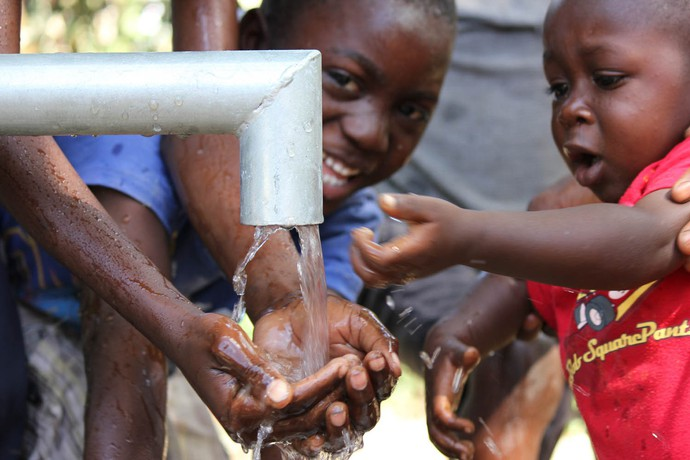
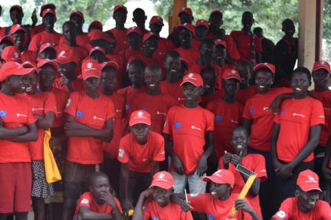
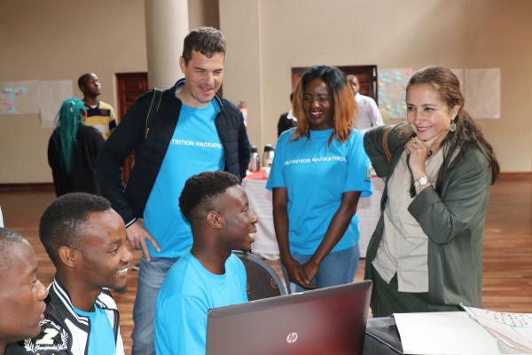

Local Food Donation
Food Bank in your local
Bring your food donations to you local food bank.
You can visit the food bank website to donate money.
We partner with food bank to transfer money to Africa.
Local Grocery Stores
Our donation bins are located at the front of grocery stores.
We pick these up daily.
We will sell these foods and the proceeds go to the African organization.
Canada Helps Organization
You can donate for LIFEWATER CANADA - Sponsor a Water Well in Africa
With your support, we can drill wells, repair hand pumps, install plumbing, health and hygiene training, improve hygiene by building toilets or toilets .
Our Website Donation
We are very happy that you trust and donate to our organization.
With your help, the rate of food shortages in Africa will drop dramatically. Thank you for your support.
You can donate below.
The places we have donated
1.Donation to Children in Africa
We spend 10% of amount of money to donate to orphans in Africa. We donate through the Website.
152 million children, accounting for a quarter, are living in conflict-war environments.
Girls in West and Central Africa face the highest risk of child marriage – about 4 in 10 are married before age 18.
We collab with "Compassion" to liaise with WHO and WWF to increase the opportunity to help orphans in Africa.
Every month we hold small camps, the kids can learn a lot of new things.

2.Durfur
Darfur remains the most critical in Sudan. Darfur is a place which is less water and food. We donated through Save the children
During day time people are affected by the heat of the sun and by night of the cold.
they are living in the open without food, cover or medicines, as they are survive with only the clothes they were wearing.
In the present,there is not official or organisation provided them any help.
We collab with "Save the Children".We will provide food, drinks and health care to the people there.
3.Somalia
A prolonged drought in Somalia has caused a severe humanitarian crisis for 4.5 million people.
It is also one of the poorest countries, where 6.2 million people, or half of the country's population, need humanitarian assistance and protection.
The Somalis are resourceful and resilient, and do whatever they can to survive and thrive beyond all.
With $50 we can provide vital food packages to families.
With $250 we can support integrated programming.
With $1000 we can help build innovative water and sanitation facilities.
4.Zimbabwe
Zimbabwe is country to the biggest monetary inflation in Africa. Nearly half of the population is in lack of food and water
When they want to buy any food, they have to use money "bag" in exchange.
Widespread poverty, HIV/AIDS, limited employment opportunities, liquidity challenges, recurrent climate-induced shocks and economic instability all contribute to limiting adequate access to food.
We collab with UNICEF Zimbabwe. We provide Child protection, Education, Heath care and food.
Contact Us
Phone number: 123-456-7890
Location: CQST • 243 Belde Drive, Charlotte NC 28F20
Email: cqst.contact@gmail.com